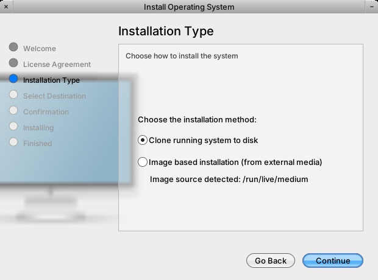

Fix the Linux backend (both install methods are broken), add a first-class NextBSD backend, and pull the FreeBSD backend out of the /System/Library/Scripts junk drawer into a properly-named, dispatcher-driven layout. For gershwin-desktop/gershwin-components → Assistants/InstallationAssistant.
The InstallationAssistant offers two methods — Clone running system to disk and Image based installation (from external media). On Linux both fail; on FreeBSD they mostly work. The two "methods" are really one pipeline (partition → format → rsync → bootloader → fstab) that differs by a single variable: the rsync source (/ for clone, the detected media for image).
Linux is broken for three reasons: (1) the deployed installer-linux.sh drifted from source and lost its --check-image-source handler, so the GUI never even offers the image radio; (2) image detection only matches iso9660, missing Debian's /run/live/medium; (3) the clone path installs the bootloader via chroot grub-install/update-grub, which needs grub + initramfs inside the copied tree — absent when cloning a live/squashfs system — and it overwrites /etc/fstab. FreeBSD works because it installs the loader by copying loader.efi + efibootmgr (no target tooling, no chroot).
NextBSD has a latent bug: the ostype rebrand flips uname -s/kern.ostype to NextBSD, so the current boolean IAIsFreeBSD() misclassifies it as Linux and would run the broken Linux backend. It needs its own backend (launchd, label-based UFS root ROOTFS, kextd autoload, hostname via configd/hostnamed — never rc.conf).
Plan: a thin dispatcher + per-OS modules with proper names, an explicit --method flag, a 3-way platform resolver, a home outside /System/Library/Scripts, and a shared first-boot identity reset (machine-id, SSH host keys, stable fstab). All in gershwin-components; no GUI redesign.

/run/live/medium). Captured on Debian. On Linux neither method produces a bootable install; on FreeBSD they mostly work.Flow: Welcome → License → Installation Type → Select Destination → Confirmation → Installing → Finished. We want both methods working on Linux, FreeBSD, and NextBSD, with the backends organized and named sanely.
Mechanically the method is one variable: SRC. Both methods then run the identical partition/format/rsync/bootloader/fstab pipeline. There is no separate image extractor — the image is just a different rsync source dir.
| Method | SRC | What it produces |
|---|---|---|
Clone running system (default; no --source) | / (the live root) | Copies the live system's flattened union view (squashfs/uzip + tmpfs overlay merged). Captures in-session changes (pkgs installed live) — but also drags in live cruft and stale runtime state unless excluded/reset. |
Image based (--source <path>) | detected media | On Linux: loop-mounts the .squashfs inside the medium and copies the pristine rootfs (explicit flatten). On FreeBSD: copies the da0 mountpoint as-is. Cleaner identity (no live drift), but ships fixed SSH keys / machine-id unless reset. |
The deep correctness consequences (duplicate host keys, stale /var/run, fstab targets, flattening the live overlay) are in §8 Identity & correctness. This builds on the union-flatten analysis in the live-ISO unionfs plan and the future Copier.framework in the native installer-backend plan.
The GUI (InstallationSteps.m) selects a backend script and drives it via NSTask. The contract has three modes and a stdout line-protocol:
| Mode | Invocation | Returns |
|---|---|---|
| Probe | script --check-image-source (InstallationSteps.m:85-87) | one line IMAGE_SOURCE:<path> (empty = none). Gates the image radio. |
| Enumerate | script --list-disks --debug (:646-647) | JSON array of {devicePath,name,description,sizeBytes,formattedSize} |
| Install | [sudo] script --noninteractive --disk <dev> --debug [--source <path>] (:1094-1113) | progress lines; exit code = success |
IAInstallerScriptPath() (:60-74) driven by the boolean IAIsFreeBSD() (:23-55): FreeBSD → installer-FreeBSD, else installer-Linux. Resolved from the app bundle Resources, not /System/Library/Scripts.--source; Image = --source <path>. There is no --method flag (installer-FreeBSD.sh:177-178: SRC="$ARG_SOURCE" else SRC="/").PROGRESS:phase:percent:message (installer-FreeBSD.sh:36-38), parsed at InstallationSteps.m:1209-1243. Errors: exit code only (:1257-1294) — no structured ERROR: contract./System/Library/Scripts/installer-linux.sh diverged from source and deleted the --check-image-source handler (source has it at installer-Linux.sh:41-53; deployed arg-parser /tmp/gersh_installer-linux.sh:19-28 has no such case). So --check-image-source falls into the catch-all, hits the root guard, prints "must be run as root", exits 1 — no IMAGE_SOURCE: line. IACheckImageSourceAvailable (InstallationSteps.m:87) gets nothing → the Installation Type step is never added (InstallationAssistant.m:241) → the image radio is unreachable.mount … type iso9660 (installer-Linux.sh:44), so Debian live media at /run/live/medium (overlay/vfat) is never detected; if forced, the script rsyncs the raw medium instead of the squashfs root.chroot $MNT grub-install … + update-grub (installer-Linux.sh:463,482,490) require grub packages + a working initramfs inside the copied tree — absent when cloning a live/squashfs system, so under set -e the install aborts or yields an unbootable disk.:501, >) — drops swap / separate /home / bind mounts the source had.set -e + piped rsync (:11,:426) aborts on the first vanished file (common when cloning a live /); many tools (mkfs.vfat, parted, blkid, grub*) are unchecked./boot/loader.efi → BOOTX64.EFI + efibootmgr -c (installer-FreeBSD.sh:457-478), or gpart bootcode for BIOS — no chroot, no target-side packages — and writes a fresh complete fstab. It succeeds against a blank formatted root.Pipeline: gpart GPT layout (efi 512M FAT32 + freebsd-ufs, or freebsd-boot 512k + ufs for BIOS) → newfs -U → rsync from SRC → copy loader + efibootmgr → write loader.conf (vfs.root.mountfrom) and fstab (installer-FreeBSD.sh:362-502). The deployed copy adds a Directory-Services identity reset for clone installs: wipe /Local, chroot dscli init (creates admin/admin), restart dshelper (/tmp/gersh_installer.sh:430-440).
Known trap: FreeBSD writes device-path fstab (/dev/da1p2, :486) not UUID/label — if disk enumeration shifts at boot, root can fail to mount. (Linux correctly uses blkid UUIDs.)
NextBSD is FreeBSD-derived, so the FreeBSD backend is the starting point — but an installed NextBSD differs in ways the FreeBSD path doesn't handle. From the live system's boot config and overlays:
| Concern | FreeBSD backend does | NextBSD requires |
|---|---|---|
| Platform detection | IAIsFreeBSD() boolean | latent bug rebranded kern.ostype=NextBSD → classified as Linux. Needs 3-way resolver, NextBSD first. |
| init / services | rc.conf, service, sysrc | INIT_PATH=/sbin/launchd; launchd-only, no rc.conf. Service enablement = LaunchDaemons under /System/Library/LaunchDaemons. |
| root device / fstab | device-path /dev/da1p2 | ROOTDEVNAME="ufs:/dev/ufs/ROOTFS" — plain UFS root labeled ROOTFS; label-based fstab (stable across enumeration). |
| kernel modules | n/a | kextd autoload from /System/Library/Extensions — ensure the dir + any boot kexts land and autoload is wired. |
| hostname / identity | sysrc hostname= / /etc/rc.conf | hostname published to SCDynamicStore (configd) / hostnamed — no file/sysrc path. Post-install must set it the NextBSD-native way. |
| loader.conf | vanilla FreeBSD knobs | NextBSD INIT_PATH/ROOTDEVNAME knobs; verify against the rebranded kernel. |
/System/Library/Scripts driftThe GNUmakefile installs the scripts into the app bundle (InstallationAssistant.app/Resources/, GNUmakefile:12-16), which is what the GUI loads. The flat installer.sh/installer-linux.sh in /System/Library/Scripts (next to Gershwin.sh, LoginWindow.sh, doit) are an unmanaged, renamed, stale manual copy. Drop that copy and the rename.
Today all three scripts duplicate the arg parser, report_progress, --list-disks JSON and --check-image-source — which is exactly how the deployed copy drifted and lost a flag. A dispatcher owning the contract makes drift impossible and lets NextBSD be a thin override of FreeBSD.
install-backend-{freebsd,linux,nextbsd}.sh (lowercase, deterministic from a platform token) — no more FreeBSD↔installer.sh casing mismatch./System/Library/Gershwin/InstallationAssistant/ or /usr/libexec/gershwin/installer/ — not the Scripts session bucket. (No rc.d / launchd boot job — the backend is a one-shot NSTask.)IAIsFreeBSD() with IAPlatformToken() → @"nextbsd" / @"freebsd" / @"linux", checking kern.ostype == NextBSD (or a /System marker) first. Then pathForResource:[NSString stringWithFormat:@"install-backend-%@", token]. This fixes the latent NextBSD-as-Linux misclassification — a real runtime bug, not cosmetics.--method clone|image flag (one-line addition at InstallationSteps.m:1109; the GUI already knows the method from IAInstallTypeStep) so the contract no longer overloads "--source present" as the method signal.The biggest cross-cutting gap: installs don't reset machine identity. Both methods need a shared first-boot/post-install reset:
/etc/machine-id, SSH host keys (/etc/ssh/ssh_host_*). Today Linux regenerates none → every install ships identical host keys + machine-id (MITM warnings, D-Bus/journald clashes). FreeBSD's deployed dscli init covers the DS user but not host keys./dev/ufs/ROOTFS label; FreeBSD: gptid/label; Linux: blkid UUID)./var/run pidfiles (the dshelper.pid → "admin can't log in" trap), and flatten the union deliberately (see the unionfs plan's find -x | cpio approach and the tmpfs-over-/usr/local/sbin dropped-binaries bug).gershwin-components)Restore --check-image-source in the Linux backend and broaden detection beyond iso9660 (re-enables the image radio); replace chroot-grub with a dependency-checked bootloader step; merge/append fstab instead of overwriting; relax set -e around rsync. Gate: a Debian live image installs and boots via both methods.
Refactor the three monoliths into install-backend.sh + common + modules/{freebsd,linux}.sh; rename per the scheme; delete the /System/Library/Scripts manual copies. GUI: IAPlatformToken() 3-way resolver + explicit --method. Gate: FreeBSD + Linux unchanged behavior through the new dispatcher.
modules/nextbsd.sh reusing the FreeBSD core, overriding: label-based UFS root ROOTFS + label fstab, launchd service enablement, kextd Extensions dir, configd/hostnamed identity, NextBSD loader.conf knobs. Gate: NextBSD installs and boots to launchd on the thinkpad-t460s target.
First-boot regeneration of machine-id + SSH host keys; medium-exclude + /var/run scrub in the clone path; per-OS default method. Gate: two installs from one image have distinct host keys/machine-id and both log in.
Copier.framework replacing the shell file-walker)./System layout, configd/hostnamed identity.gershwin-components/Assistants/InstallationAssistant/InstallationSteps.m (contract), Resources/installer-{FreeBSD,Linux}.sh (backends), GNUmakefile (deploy), AssistantFramework/GSDiskUtilities.*.Filed 2026-06-21. Root-caused from a 4-agent investigation (Linux failure analysis, FreeBSD/NextBSD backend mechanics, GUI↔backend contract + organization, install-method semantics) plus live capture of the InstallationAssistant on Debian. Target repo: gershwin-desktop/gershwin-components (Assistants/InstallationAssistant, branch feat/nextbsd).